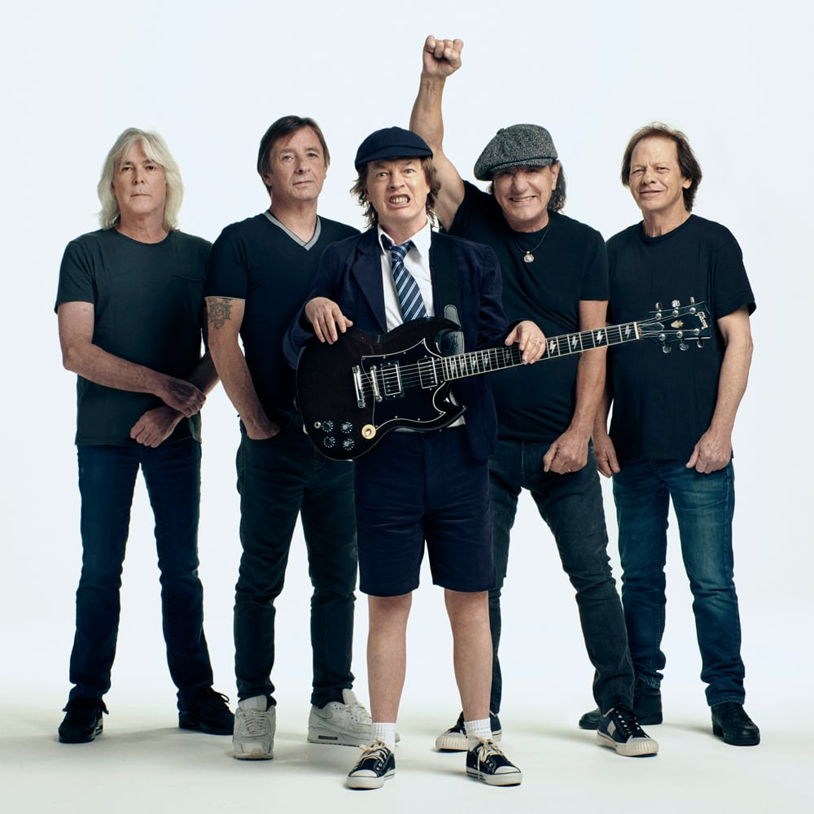

Про гурт
AC/DC — легендарний австралійський хард-рок гурт, заснований у 1973 році братами Ангусом та Малкольмом Янгами.
Гурт став одним із найуспішніших та найвідоміших представників хард-року. Їх музика відома потужними гітарними рифами, енергійними виступами та простим, але впізнаваним стилем.
AC/DC продали сотні мільйонів альбомів по всьому світу та вплинули на розвиток рок музики.
AC/DC були створені у Сіднеї в 1973 році. Назва гурту означає "змінний/постійний струм" і символізує енергію та силу їхньої музики.
У 1970-х роках гурт швидко став популярним завдяки концертам та харизматичному вокалу Бона Скотта.
Після смерті Бона Скотта у 1980 році новим вокалістом став Браян Джонсон. Саме тоді вийшов легендарний альбом Back in Black, який став одним із найпродаваніших альбомів в історії музики.
AC/DC продовжували випускати успішні альбоми та виступати на найбільших сценах світу.
Учасники гурту
- Ангус Янг — соло-гітара
- Малкольм Янг — ритм-гітара
- Браян Джонсон — вокал
- Бон Скотт — вокал (1974–1980)
- Кліфф Вільямс — бас-гітара
- Філ Радд — ударні

Найпопулярніші пісні
- Back in Black
- Highway to Hell
- Thunderstruck
- T.N.T.
- Hells Bells
- You Shook Me All Night Long
- Shoot to Thrill
- Dirty Deeds Done Dirt Cheap
Альбоми
- High Voltage (1975)
- Dirty Deeds Done Dirt Cheap (1976)
- Highway to Hell (1979)
- Back in Black (1980)
- For Those About to Rock (1981)
- The Razors Edge (1990)
- Black Ice (2008)
- Power Up (2020)
Концерти та виступи
AC/DC відомі своїми надзвичайно енергійними концертами. Ангус Янг став символом гурту завдяки своїй шкільній формі та активній поведінці на сцені.
Гурт виступав на найбільших стадіонах світу та став одним із найвідоміших концертних рок гуртів.
Їхні шоу включають потужний звук, світлові ефекти та величезну взаємодію з публікою.